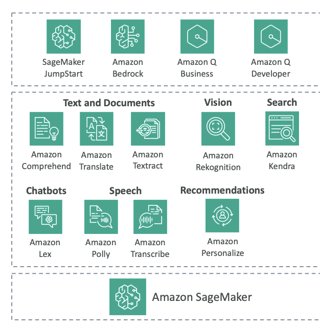

AWS AI Managed Services
In this section, we're going to see a lot more AWS AI managed services.
So why do we want them?
These services are pre-trained machine learning services that are geared towards very specific use cases. For example, we've seen that we have Amazon Bedrock to do GenAI, and we have even seen higher level GenAI services, such as Amazon Q Business and Amazon Q Developer. We'll have a look soon at SageMaker, but you may want to do other things than GenAI, and so there are lots of services that we'll learn about in this section.
AWS AI Service Categories
Text and Document Processing
- Amazon Comprehend - Process text
- Amazon Translate - Language translation
- Amazon Textract - Document processing
Vision Services
- Amazon Rekognition - Image and video analysis
Search and Communication
- Amazon Kendra - Intelligent search
- Amazon Lex - Chatbot creation
Speech Services
- Amazon Polly - Text-to-speech
- Amazon Transcribe - Speech-to-text
Personalization
- Amazon Personalize - Recommendation engine
Complete Machine Learning Platform
- Amazon SageMaker - Comprehensive ML service (a huge service in AWS)

Why Use AWS AI Managed Services?
You can do everything on your own computer or on your own server in the cloud, but you may want to use these services for several key reasons:
Responsiveness and Availability
- Available in many different regions
Redundancy and Regional Coverage
- Always available with built-in redundancy
- Deployed across multiple Availability Zones
- Meaning that if there is a failure in the cloud, then these services may still work
Performance Optimization
- Specialized CPUs and GPUs embedded in these services
- Optimized for best cost savings for your use case
Cost-Effective Pricing
- Most services use token-based pricing
- Meaning that you Pay only for what you use
- Because you No need to over-provision servers for your use case
Provisioned throughput
- Option for provisioned throughput on some services
- These are for predictable workloads that provides more cost savings
- And Delivers more predictable performance
What are Predictable Workloads?
Predictable workloads are applications with consistent, large-scale usage patterns that need guaranteed throughput and performance
Exam Perspective
AWS will want you to know about these services from an exam perspective, and this is what we're going to explore in this section.